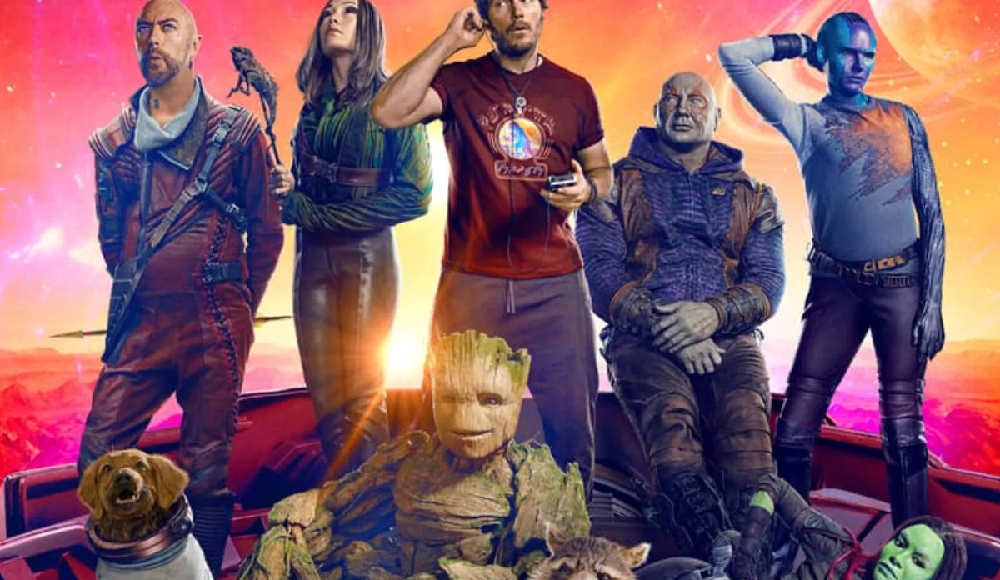
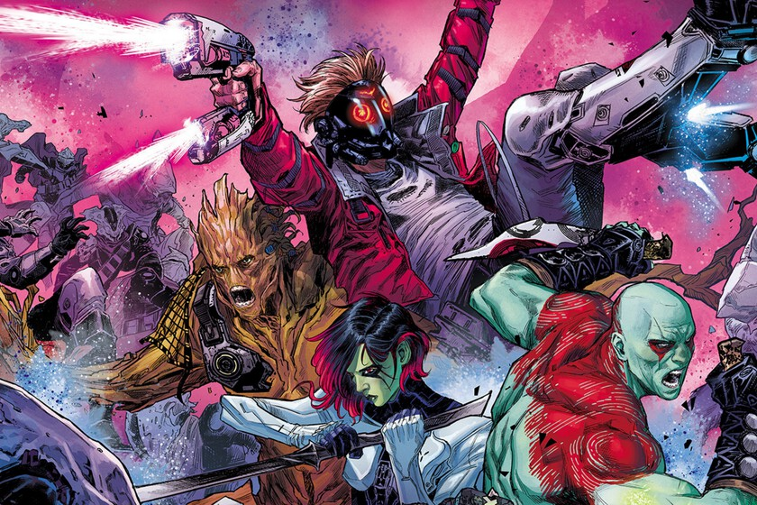

Origen de los Guardianes
Creadores: Arnold Drake y Gene Colan
Primera aparición: Marvel Super-Heroes #18 (1969)
Editorial: Marvel Comics
Los Guardianes son un grupo de inadaptados cósmicos que se unieron para proteger la galaxia... o al menos intentarlo. Su historia moderna comenzó con Peter Quill (Star-Lord), Rocket, Groot, Gamora y Drax, quienes terminaron formando una familia poco convencional.
Miembros Más Reconocidos
Integrantes destacados: Star-Lord, Gamora, Drax, Rocket, Groot, Nebula y Mantis.
Su unión se basa en la amistad y el humor, demostrando que incluso los más rotos pueden salvar el universo.
Principales Enemigos

Villanos recurrentes: Thanos, Ronan el Acusador, Ego el Planeta Viviente, y los Soberanos.
Entre explosiones, sarcasmo y batallas espaciales, los Guardianes han mostrado que hasta los desadaptados pueden ser héroes.
Etapas Relevantes
• Origen Clásico (1969): Primera formación en un futuro alternativo.
• Renacimiento (2008): Nueva alineación moderna con Quill y Rocket.
• Era Cinematográfica (2014–actualidad): Humor, corazón y música ochentera con gran éxito mundial.
Legado
Los Guardianes nos recuerdan que la familia no siempre es de sangre. Como diría Groot: “I am Groot.”